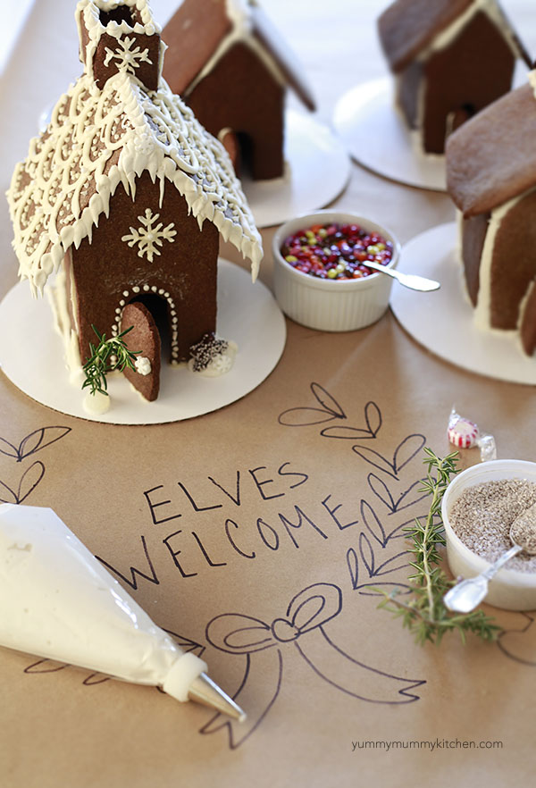

.png)
.PNG)
.PNG)
.PNG)
.PNG)
.PNG)
.JPG)
.JPG)
.PNG)
.PNG)


It’s been quite a while since we have had a Talk of the Weekend around here. This weekend is always one of my favorites because it marks the official start of the Christmas season to me, and I love seeing all the Christmas displays and creative ideas for the season everywhere. So let’s get right to it!
Every year, a few people ask me how I make our gingerbread houses.
.jpg)
It is really easy to do because I just use pre-made kits from Walmart or Target, and merely decorate them with the white frosting that is included in the kit. Then I “glue” on some sprigs of artificial greenery with a bit more icing for garlands and plants around them. Now if you want to know how to make them from scratch, just read this post from Marina, the brains behind the Yummy Mummy Kitchen blog.

You could also make an entire city of gingerbread buildings!

The video tutorial for it is good. I love how they prebake the cookies for a few minutes to firm them up, then remove the excess dough and finish baking them.
Or perhaps you just want a little gingerbread man to tie on to your Christmas packages.
Here is a precious one with directions for you at A Homemade Living.
There are more great ideas for creative gift wrapping here.
When you purchase your Christmas tree this year, be sure to ask for some extra greenery that they often cut off at the tree lot (or just save a bit of your own.) These door hangers made from a few branches are easy to create, and they add a nice holiday touch to your rooms. (Of course I love the red ribbon on them. 🙂 )
And here are a few table setting ideas for your holiday table.
If you are looking for a clever and delicious idea for a dish to take to a Christmas party this year, this cheese wreath just might be your answer. 🙂
Besides all the Christmas related ideas in this week’s Talk of the Weekend, I wanted to share just a little of our Thanksgiving with you before that holiday is a too distant memory. Originally, our oldest son was to fly home from Seattle, spend Thanksgiving with us, and then we were all going to spend next week at Disney World with our daughter. Unfortunately, our son has had quite a few migraines recently and did not have the leave left to take off such an extended period of time. So we cancelled our Disney trip, and my husband, our other son, and I flew to Seattle for Thanksgiving at our son’s small apartment.
Our table was simply set for the four of us with a cookie from a local bakery topping off the setting.
And we were able to pull together an entire Thanksgiving dinner with groceries from Whole Foods and Safeway, and a cheesecake and baby pumpkin cake from Hoffman’s Bakery. My husband made a pecan pie, while I cooked up a sweet potato souffle, and a few other dishes. Preparing a turkey was a joint effort. 🙂
While we are looking at our son’s kitchen, let me just give you a quick tour of the rest of his place. I did a little decorating for it a few months ago… starting from an idea to use a National Parks poster (since one of the main reasons he moved to the West Coast was because of all the wonderful hiking opportunities in the National Parks out there.)
I framed it in a mat and frame combination from Target, and my husband found a National Parks calendar at Whole Foods that I used in other frames around the apartment.
The apartment has this cute little desk corner.
I framed a National Park postcard that we had for the art there.
And a couple more calendar prints went up in the bedroom.
It’s not a fancy place, but it works just fine for a twenty-something year old guy. 🙂 While we were there we spent a little time outside on a cold and rainy day.
REI closes all of its stores on Black Friday to encourage everyone to spend some time outdoors. So we took one of their posters with us on Friday as we went up to the Northern Cascades area.
Couldn’t resist taking this photo with everyone! 🙂
During our time in the Seattle area we also saw the new Disney movie, Moana. It was beautifully done, and we all enjoyed it at a theater with reclining seats where you are served dinner. (The best way to see a movie to me!) We also dined out a few times and did a little shopping at Bellevue Square. I was totally enchanted with their Christmas display!
I kid you not. Rudolph’s nose even glowed. 🙂
And now it is officially time to think of Christmas. You see, because our daughter had scheduled off next week for our visit there (the trip we cancelled) she has decided to drive home for a visit beginning tomorrow…a visit that will be her Christmas since she has to work during the actual Christmas Day. So I have to get going on all things Christmas here!
I’m leaving you with one sweet idea for the start of the holiday season.
Hope you enjoy it!
Let the shopping, baking, decorating, merry making, wrapping season begin! 🙂
Until next time…


.PNG)
What a special time you made for your family. Your son’s apartment is charming.
Oops! Icing on the cake! although in it is good too 🙂
Sorry, I’m a little late commenting but I just wanted to say thank you for all the helpful tips. Also for sharing pictures of your son’s apartment. How lovely that you were able to change plans and be with him for Thanksgiving. I hope his migraines soon improve. Then the icing in the cake! you have your daughter coming home for a week 🙂
Such a great family picture too …really nice to see you in it. I definitely support shops closing over Thanksgiving and Christmas!
Rosemary
Hi Kelly,
I enjoyed this episode of Talk of the Weekend. It had a little bit of many things-ideas for Christmas but included your Thanksgiving. I am so impressed with how neat and tidy your son’s apartment is! It is very cute! As always, thanks for the time and effort you put into your wonderful blog. ~Anne
Kelly,
What a fun impromptu Thanksgiving. As you know, I love Seattle and am sure if felt seasonal and fun. We saw Moana too and in a theater with reclining seats and tray tables…Mr. B. has decided that is the only way to see a movie!
I’m ready for Christmas and am savoring the season, my favorite. I don’t want to rush through it. I’m trying to slow down and enjoy.
Have fun with your daughter’s visit (her Christmas). How I remember having to work at Disneyland for all major holidays. 🙂
xo,
Karen
Hi Kelly, I love the post and all of the pics! Could you share the bakery that did the beautiful turkey cookies for you? So hard to find cookies like that .
thanks so much, Vickie
—————————————————————-
The cookies came from Hoffman’s Cakes in Redmond, Washington.
Kelly
How nice you could change your plans and still be able to see your sons and spend the upcoming week with your daughter!! And you still had a Thanksgiving feast! 😉 Love how you helped your son decorate his apartment. Perfect theme. We were happy to be outside Friday too at my husband’s sister’s “Turkey Bowl.” We were too “old” to play football so we took a little hike. We did “Black Friday” shop for the first time in our life that morning though, only because we needed a dishwasher! 😛 Now, I am going to checkout a couple of those links for some inspiration. I’m starting my decorating today!!
Hi Kelly, I’m glad you decided to all be together! Sounds like y’all can make the best of any situation. Hope those migraines go away; I’ve had them too. On with Christmas!
I’m so sorry your son has migraines but glad you were able to visit him up here. Nice apartment! My sis, niece and I love that style of posters/art. I grew up in Renton, btw. Have fun getting ready for an early Christmas with your daughter!
💕I stopped just to check for postings and found yours and whizzed through it and promising myself a treat of looking indepth at it again when I get all the fall decorations down while cooking turkey hash and the last of the TG feast!! Amazed how your plans changed and think it is great you can go off whenever you want and have a great adventure!! I can just see you whizzing around getting your organized bins out and “whala” Christmas!! You have inspired me to get ‘Er done!! I’m always singing “Christmas is coming and the goose IS getting fat and please to put a penny in the old man’s hat – if you have no penny a 1/2 penny will do and if you have not a 1/2 penny — may God bless you!” I’m in the spirit!! 🎶😊
This post is what retirement is all about…readjusting! Our kids now have jobs, real life concerns….and in order to keep the family together, and our traditions going….sometimes we have to take the celebrating to them! Kudos to you and your hubby! Looks like you had a great Thanksgiving! Looking forward to more Christmas posts! 😉
Kelly,
Thank you for taking the time to write and share this post. For a while now I have been thinking about flexibility. Change is hard but it doesn’t have to be a bad thing. Sometimes we get so steeped in “tradition” that we can’t or won’t bend when we need to. Our Thanksgiving celebration didnt look this year the way I thought it would ten years ago, but it was still soooo great.
Retirement has brought for us the ability to go and do as we need to. It is a wonderful thing. What I saw in your post was a coming together for a son and I doubt any of you will ever forget this Thanksgiving in his cozy, cute apartment in Seattle. I can get just a little sappy over things like this. lol. Anyway kudos to you guys for making the most of a last minute change of plans.
I love those national park posters and how nice they look in your son’s apartment.
I am going to try to do a gingerbread house with my two year old grandaughter this week. Thanks for the reminder of how cute they look in a big glass jar.
Have fun this week with your daughter.
Merry Christmas,
DiAnne
Kelly, how wonderful you were able to make such last minute arrangements, ensuring your far-flung son would enjoy a family holiday. And now your daughter will be home with you for a visit. Your son’s apartment definately has your touch, it’s quite homey. Enjoy your week! T
What a wonderful family you have! Kudos for the calendar art work. I just love that style of illustration, don’t you? I wish I knew what they call it. Anyway, sweet story!
Kelly,
I love hearing how flexible your family is so that you guys may still get your together time. Thanks for sharing. Take care.
Dawn
What fun! An impromptu trip for the holiday! Wow, you did good with the feast, I’m impressed! Sons apartment is perfect for a single guy, and it shows a bit of your touch, so he will feel like home.
Love the reindeer!
We are just starting our decorations, outside first, then the inside. Hope I can get it all together by Christmas! I have to take more breaks than I used to, so the tree alone takes a full day!
Hope you have a great time with your daughter home! Mine comes in on the 26th.
How wonderful that you were able to go to Seattle for your son, I bet he was so thrilled. You deserve “The Best Mom” award. I love Seattle, I had been there 3 or 4 times before our ex- son in law got relocated to Ft. Bragg.
“Flexible.” That’s the key word for enjoying life. And you win this round of flexibility, hands down!